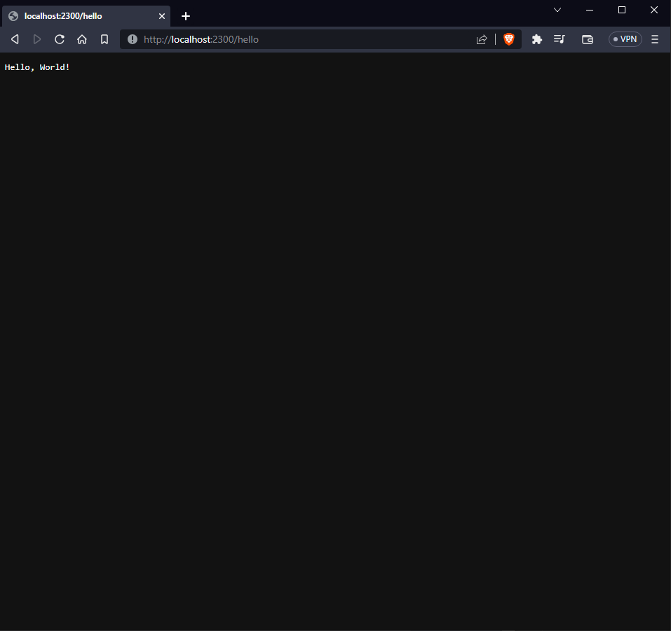

Minimal server example
Once you have successfully setup everything, it is time to create an example
Editing main.rs
Let's begin by editing the main.rs file, which is from where our project's code is executed
Initially, main.rs should look like this
fn main() { println!("Hello, world!"); }
Let's begin by including the library on the top of our main.rs file
extern crate oak_http_server; use oak_http_server::{Server, Status}; fn main() { let hostname = "localhost"; let port: u16 = 2300; let mut server = Server::new(hostname, port); server.on("/hello", |_request, response| { response.send("Hello, World!") }); server.start(|| { println!("HTTP server is now running..."); }); }
Next, create a new Server instance:
extern crate oak_http_server; use oak_http_server::{Server, Status}; fn main() { let hostname = "localhost"; let port: u16 = 2300; let mut server = Server::new(hostname, port); server.on("/hello", |_request, response| { response.send("Hello, World!") }); server.start(|| { println!("HTTP server is now running..."); }); }
Add a basic handler that always returns a static response:
extern crate oak_http_server; use oak_http_server::{Server, Status}; fn main() { let hostname = "localhost"; let port: u16 = 2300; let mut server = Server::new(hostname, port); server.on("/hello", |_request, response| { response.send("Hello, World!") }); server.start(|| { println!("HTTP server is now running..."); }); }
Lastly, start the HTTP server:
extern crate oak_http_server; use oak_http_server::{Server, Status}; fn main() { let hostname = "localhost"; let port: u16 = 2300; let mut server = Server::new(hostname, port); server.on("/hello", |_request, response| { response.send("Hello, World!") }); server.start(|| { println!("HTTP server is now running..."); }); }
Now, if you open your web browser and navigate to localhost:2300/hello, you should see a webpage displaying your message:
